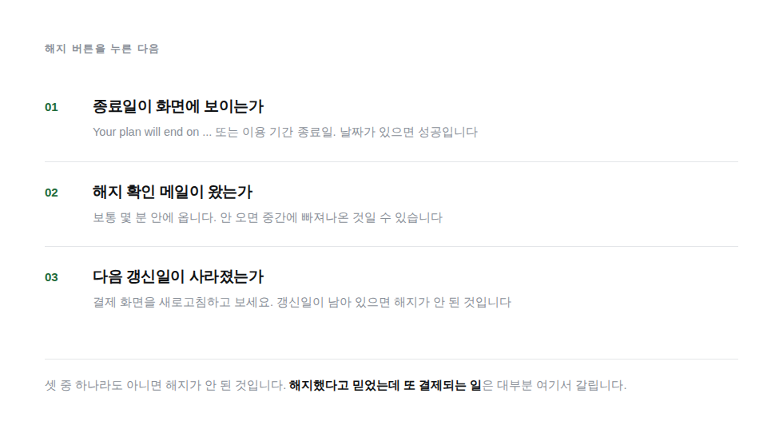

해지를 미루는 가장 큰 이유는 귀찮아서가 아닙니다. 남은 기간이 날아갈 것 같아서입니다.
대부분의 구독 서비스는 해지해도 이미 결제한 기간이 끝날 때까지 그대로 쓰게 해줍니다. 9월 15일까지 결제되어 있으면 오늘 해지해도 9월 15일까지는 똑같이 쓰십니다. 다음 결제가 안 될 뿐입니다.
그러니 쓸지 말지 고민되면 일단 해지해 두는 편이 유리합니다. 쓰다가 마음이 바뀌면 다시 결제하면 됩니다. 반대로 미루면 결제가 먼저 일어나고, 그때는 환불이 어렵습니다.
해지 경로를 깊게 묻어두는 것은 업계 관행에 가깝습니다. 보통 이 순서로 들어가면 나옵니다.
여기서 붙잡기 화면이 한두 번 더 나옵니다. 할인 제안, 일시정지 제안, 이유 묻기 순서로 나오는 경우가 많습니다. 할인을 제안한다면 계속 쓸 생각이 있을 때만 받으세요. 안 쓸 거면 싸게 사도 낭비입니다.
해지했다고 믿었는데 다음 달에 또 결제되는 일이 실제로 자주 생깁니다. 중간 화면에서 나가버렸거나, 확인 버튼을 한 번 덜 눌렀거나, 계정이 두 개인 경우입니다.

그리고 그 종료일을 어딘가에 적어 두세요. 그날 이후에 결제 화면을 다시 열어 보면 확실합니다.
해지를 누르면 붙잡는 화면이 한두 번 더 나옵니다. 대개 이 순서입니다.
| 제안 | 받을 때 | 받지 말 때 |
|---|---|---|
| 할인 제안 다음 3개월 50% 같은 것 |
계속 쓸 생각인데 비싸서 고민이던 경우 | 안 쓸 거면 싸도 낭비입니다. 할인 기간이 끝나면 원가로 돌아옵니다 |
| 일시정지 1~3개월 멈춤 |
바쁜 시기만 지나면 다시 쓸 것이 확실한 경우 | 안 쓸 거면 정지가 아니라 해지여야 합니다. 정지는 자동으로 다시 시작됩니다 |
| 하위 요금제로 변경 | 기능은 필요한데 상위 기능을 안 쓰던 경우 | 아예 안 쓸 거면 해지하세요 |
| 해지 이유 묻기 | 아무거나 고르고 넘어가면 됩니다 | 여기서 창을 닫으면 해지가 안 됩니다. 끝까지 누르세요 |
가장 흔한 실패가 마지막 줄입니다. 이유를 묻는 화면에서 귀찮아 창을 닫으면 앞의 단계가 전부 취소됩니다. 완료 화면을 보기 전까지는 해지가 아닙니다.
해지가 늦어 결제가 먼저 됐다면 환불을 요청해 볼 수 있습니다. 특히 해지했는데도 결제된 경우는 서비스 쪽 문제라 받아들여지는 경우가 많습니다.
해지하면 만든 결과물에 접근이 막히는 서비스가 많습니다. 끊기 전에 확인하세요.
[서비스 이름] 구독을 해지하려고 하는데 해지 버튼을 못 찾겠어. 다음을 알려줘. 1. 해지 화면까지 가는 메뉴 경로를 단계별로 2. 중간에 나오는 붙잡기 화면이 몇 단계이고 각각 무엇을 묻는지 3. 해지가 완료됐을 때 화면에 무엇이 표시되는지 (종료일이 나오는지, 즉시 종료인지) 4. 해지해도 남은 기간을 계속 쓸 수 있는지, 즉시 끊기는지 5. 해지 전에 내보내거나 챙겨야 할 데이터가 있는지 웹에서 해지가 안 되고 메일이나 채팅으로만 되는 서비스라면 그것도 알려줘. 확실하지 않으면 추측하지 말고 공식 도움말 링크를 줘.
결제되기 전에 알려드립니다.
해외 AI 구독이 자동으로 빠져나가기 며칠 전에 미리 알려주는 무료 크롬 확장 프로그램입니다.
이 글로 안 풀리는 상황이 있으면 적어 주세요. 저희가 답을 답니다. 같은 일을 겪는 분이 그 답을 보고 갑니다.
공개로 남기기 어려운 이야기라면 stevejk911@gmail.com 으로 보내 주세요. 결제 화면이나 금액처럼 자세히 주실수록 좋습니다. 직접 확인해서 방법을 찾아 답장드립니다.
 Donna
Donna